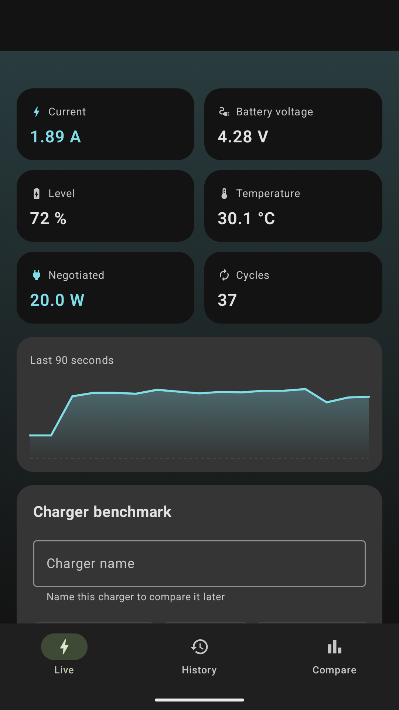
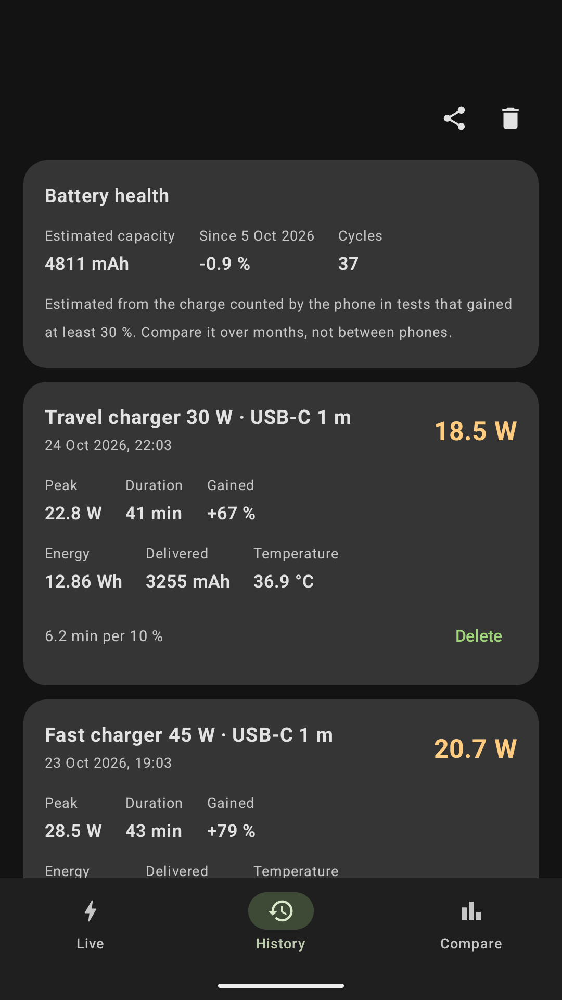
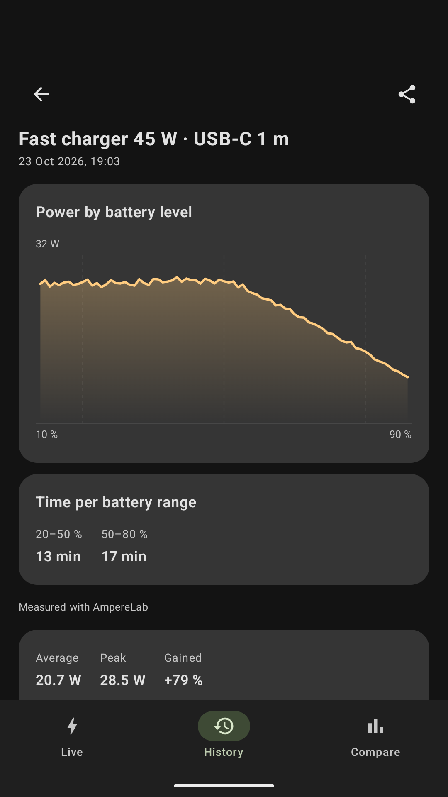
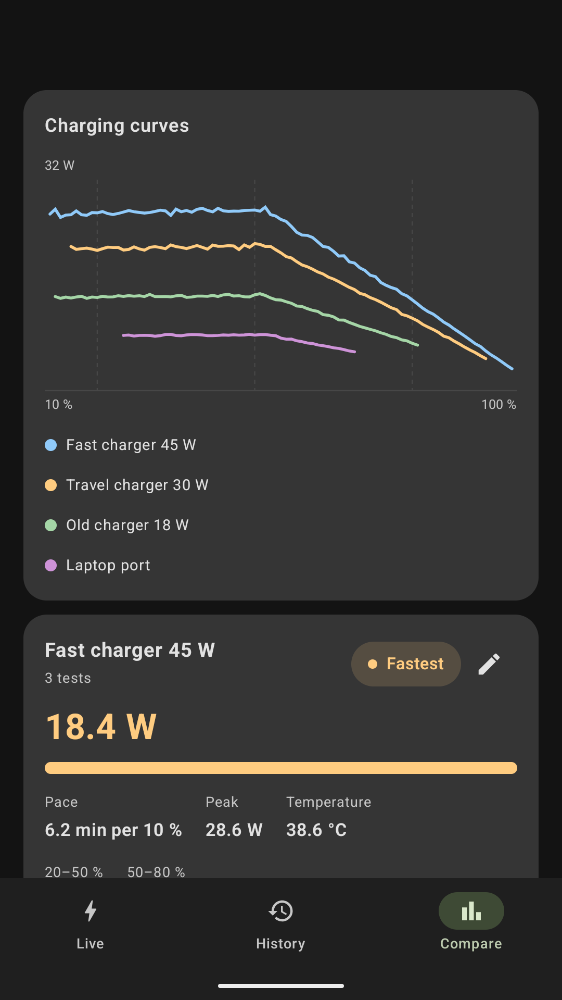
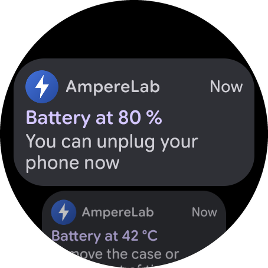

Mesurez les watts réels de charge.
Comparez tous vos chargeurs.
Android affiche « En charge » dès qu'un câble est branché, même si le téléphone se décharge. AmpereLab mesure la puissance nette réelle entrant dans la batterie et évalue vos chargeurs avec précision.


Puissance nette signée
Watts réels (+ ou -) entrant dans la cellule de batterie.
Écran éteint
Mesurez toute la nuit en sécurité grâce au service d'arrière-plan.
Exclusion des pauses
La charge adaptative et les limites à 80 % ne faussent pas vos moyennes.
100 % Privée
Pas de pub, aucun traqueur et zéro permission Internet.
Conçue pour comprendre comment votre téléphone charge
Cessez de vous demander si un câble bon marché bride votre chargeur rapide. Obtenez des mesures claires en quelques secondes.
Télémétrie en direct & compteur radial
Observez la puissance monter et descendre selon les protocoles USB-PD. Affiche la tension (V), le courant (A), la température (°C) et les wattheures (Wh) par intégration trapézoïdale.
Classement objectif
Comparez chaque bloc de charge par sa vitesse réelle : minutes nécessaires pour gagner 10 % de batterie et moyenne pondérée.
Tests nocturnes fiables
Nommez le chargeur, lancez le test et verrouillez votre téléphone. Le service en premier plan enregistre tout sans allumer l'écran.

Widget, tuile rapide & export CSV
Consultez la puissance instantanée depuis votre écran d'accueil Material You ou les réglages rapides. Exportez vos données en CSV en un clic.

Alertes de charge sur votre téléphone et votre montre Wear OS
Soyez averti à chaque charge, pas seulement pendant un test. Choisissez le niveau avec un curseur et ajoutez des alertes facultatives pour la chaleur, la perte de charge et la charge bloquée. Elles arrivent automatiquement sur votre montre Wear OS associée, sans application à installer sur la montre.
- Niveau de batterie atteint 50–100 %
- Température élevée 38–45 °C
- Branché mais perd de la charge 2 min
- Charge en pause > 30 min

Pourquoi les autres applications vous trompent
Android affiche « En charge » dès qu'une tension est détectée, même si la batterie baisse. AmpereLab distingue quatre états physiques réels :
| État | Seuil | Ce que cela signifie réellement |
|---|---|---|
| ● En charge | > 0,5 W dans la batterie | L'énergie remplit activement la batterie. La jauge animée reflète le flux en temps réel. |
| ● En pause | Branché, ~0 W net | Charge adaptative, régulation thermique ou limite à 80 % active. Exclu de la moyenne pour préserver la comparabilité de vos tests. |
| ● Décharge branché | Watts négatifs branché | Le smartphone consomme plus d'énergie que le chargeur n'en fournit (ex. GPS en voiture ou câble défectueux). |
| ● Batterie pleine | 100 % atteint | Mode de maintien. La batterie est totalement rechargée. |
👉 Comment nous aider en 30 secondes (2 étapes)
AmpereLab est actuellement en phase de test fermé sur Google Play. Suivez ces deux étapes simples pour installer la bêta :
Rejoindre le groupe d'accès
Ouvrez le lien et cliquez en haut sur le bouton « Rejoindre le groupe » (1 clic suffit).
Télécharger sur Google Play
Une fois dans le groupe, Google Play débloque automatiquement l'accès au téléchargement pour votre compte.
Nouveautés de chaque version
Améliorations continues apportées à chaque mise à jour d'AmpereLab.
- Les alertes de charge fonctionnent désormais pour chaque charge, pas seulement pendant les tests : choisissez le niveau avec un curseur.
- Nouvelles alertes facultatives : température élevée, perte de charge en étant branché et charge en pause.
- Les alertes s'affichent aussi sur votre montre Wear OS.
- L'application vous prévient désormais lorsqu'une nouvelle version est disponible sur Google Play et propose de l'installer après un téléchargement en arrière-plan.
- Nouvelles langues prises en charge : allemand, français, italien et portugais brésilien.
- Capacité de batterie personnalisable manuellement lorsque le modèle n'est pas dans le catalogue.
- Diagnostic complet des capteurs : données brutes et calibration de polarité à copier ou partager.
- Détection des unités plus fiable hors smartphones Google Pixel.
- Consommation CPU réduite au repos lors des mesures longues.
- Nouvel écran de paramètres avec choix du thème et réglages des seuils.
- Visionneuse de nouveautés intégrée dans l'application.
- Sauvegarde et restauration locale complète sans dépendance cloud.
- Édition des sessions, du nom des chargeurs et étiquettes personnalisées de câbles.
- Filtres avancés par date et type de chargeur dans l'historique.
- Bouton d'annulation lors de la suppression de sessions.
Foire Aux Questions
AmpereLab nécessite-t-il le root ou ADB ?
L'application consomme-t-elle de la batterie ?
Pourquoi la puissance oscille-t-elle pendant la charge ?
Mes données sont-elles protégées ?
INTERNET sur Android. Ni publicité, ni pistage, ni serveurs distants.
Prêt à tester vos chargeurs ?
Rejoignez la bêta fermée d'AmpereLab dès aujourd'hui et découvrez quels chargeurs et câbles délivrent réellement une charge rapide.